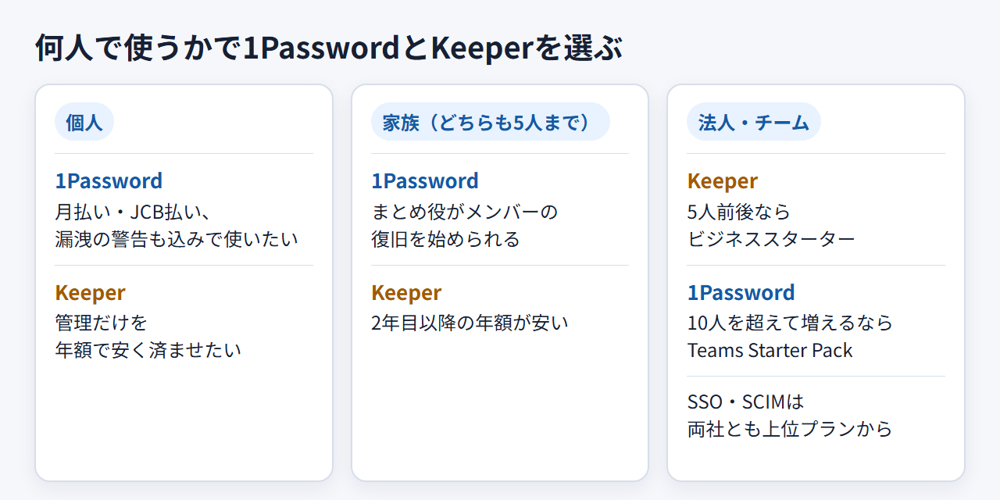

Keeperと1Passwordを比較｜料金・安全性・日本語対応で選ぶならどっち？
1PasswordとKeeperは、どちらも個人・家族・法人向けのプランを持つパスワード管理サービスです。ただ、無料版の有無、料金の表示通貨、解約後のデータの扱いが違い、誰が使うかで向く製品が変わります。
月払いで始めたい人、JCBで払いたい人、漏洩の警告まで基本料金に含めたい人は1Password。パスワード管理だけを年額で安く済ませたい人、トライアル後に自動で課金されたくない人、部署ごとに管理者を分けたい法人はKeeperが候補です。 編集部はどちらも契約していないため、両社の公式情報と公開レビューをもとに整理します。
1Passwordの日本語公式ページで、個人・家族・チーム向けのプランと無料トライアルの案内を見られます。
Keeperの日本語公式ページには、円表示の料金と無料トライアルの入口があります。
結論：個人・家族・法人で1PasswordとKeeperはこう選ぶ
どちらが優れているかより、何人で使うか、漏洩の警告まで要るか、どう払うかで決まります。

- 個人で使う場合：パスワード管理だけならKeeperが安い。漏洩の警告まで含めるとほぼ同額で、月払いやJCBを使いたいなら1Password
- 家族で共有する場合：どちらも5人まで。まとめ役がメンバーの復旧を始められる仕組みを重視するなら1Password。2年目以降の年額はKeeperが安い
- 法人・チームで管理する場合：5人前後ならKeeperのビジネススターター、10人を超えて増えるなら1PasswordのTeams Starter Packが割安。SSO・SCIMは両社とも上位プラン（1PasswordはBusiness、Keeperはエンタープライズ）から
- 決めきれない場合：1Passwordは14日間、Keeperは個人向けが30日間試せます。並行して試すなら、期間後に自動で有料へ移る1Passwordの期限を先に管理します
1Passwordでは、トライアル後に移るプランと、月払い・年払いの差がわかります。
Keeperでは、個人・ファミリーの年額と、トライアル後に無料版へ戻る条件がわかります。
料金と無料で使える範囲の違い
1Passwordに常設の無料プランはなく、Keeperには機能を絞った無料版「Keeper Free」があります。 有料プランは、1PasswordがUSD建てで月払いと年払いから選べるのに対し、Keeperは日本語ページで税別の円表示、年払いの一括請求が基本です。
無料版とトライアルは終了後の扱いが逆
1Passwordは、個人・家族向けのIndividualとFamilies、法人向けのTeams Starter PackとBusinessに14日間の無料トライアルがあり、期間が終わると自動で有料契約へ移ります。トライアル中に解約すれば課金はありません。
Keeperの個人向けは、個人プラン相当のKeeper Unlimitedを30日間試せます。終了後は自動でKeeper Freeへダウングレードします。期限を過ぎても自動で有料へ切り替わらない点が、1Passwordとの違いです。法人向けのトライアルは14日間です。
ただ、Keeper Freeはモバイル1台・保存10件までで、同期、共有、ブラウザ拡張、Web Vaultは使えません。無料版で足りるのは、スマートフォンで少数のパスワードを持ち歩く程度の使い方です。
個人・家族の料金はアドオン込みで比べる
- 1Password Individual：年払いで月額$2.99（新規の初年度プロモ）、通常は月額$3.99。月払いは$4.99
- 1Password Families（最大5人）：年払いで月額$4.49（初年度プロモ）、通常は月額$5.99。月払いは$7.99
- Keeper 個人：月額￥410、年額￥4,915を一括請求（税別）
- Keeper ファミリー（5ユーザー・10GBのファイル保存）：月額￥818、年額￥9,811を一括請求（税別）
- Keeperのアドオン：漏洩監視のBreachWatchが個人で年額￥2,970、ファイルストレージが年額￥1,680、コンシェルジュが年額￥17,146
1ドル=157円換算（執筆時点の目安。為替で変動）では、1Password Individualの通常年額$47.88は約7,517円、初年度プロモの$35.88は約5,633円です。Familiesは通常年額$71.88が約11,285円、初年度プロモの$53.88が約8,459円になります。
1Passwordは、弱いパスワードや使い回し、侵害されたサイトを知らせるWatchtowerが、IndividualとFamiliesの料金に含まれます。Keeperで漏洩の警告を受けるにはBreachWatchを足す必要があり、足すと個人の年額は合計￥7,885（税別）になります。監視の範囲は同じではありませんが、年額を並べると次のとおりです。
- パスワード管理だけ：Keeper個人の￥4,915（税別）が、1Passwordの通常年額 約7,517円より安く、初年度プロモの約5,633円も下回る
- 漏洩の警告まで含める：1Password 約7,517円に対し、Keeper＋BreachWatchは￥7,885（税別）。ほぼ同じ水準で、表示額では1Passwordがやや安い
- 家族：Keeperファミリーの￥9,811（税別）に対し、1Password Familiesは初年度が約8,459円、2年目からは約11,285円
Keeperは税別の表示なので、USD建ての1Passwordとは税の扱いが違う点も差し引いて見てください。
法人は人数の区切りと年払い条件で比べる
- 1Password Teams Starter Pack：年払いで月額$24.95。10人分込みで、追加は1席$4.99/月、最大20人
- 1Password Business：年払いで1ユーザー月額$8.99（年額$107.88）
- 1Password Enterprise：要問い合わせ
- Keeper ビジネススターター：1ユーザー月額￥408（年払い、5〜10ユーザー）
- Keeper ビジネス：1ユーザー月額￥617（年払い）
- Keeper エンタープライズ：日本語ページの表示は1ユーザー月額￥908（年払い）。導入は見積もりで決まります
人数ごとの月額を並べると、次のようになります（Keeperは税別）。
- 5人：Keeperビジネススターター￥2,040、1Password Teams Starter Pack $24.95（約3,917円）
- 10人：Keeperビジネススターター￥4,080、1Password Teams Starter Pack $24.95（約3,917円）
- 15人：Keeperビジネス￥9,255（ビジネススターターは10ユーザーまで）、1Password Teams Starter Pack $49.90（約7,834円）
5人前後はKeeperが安く、10人でほぼ並び、10人を超えると1Passwordが割安です。Teams Starter Packは20人までなので、それを超える見込みがあれば1Password Businessとの比較になります。
1Passwordの法人向け料金ページで、Teams Starter PackとBusinessの席数と価格を見比べられます。
Keeperの法人向け料金ページでは、ビジネススターターからエンタープライズまでの価格と、SSOなどの機能がどのプランから使えるかを見比べられます。
安全性と共有・管理機能の違い
どちらも暗号化して保管し、運営会社が中身を読めない設計をうたっています。違うのは、ログインを守る仕組みと、共有・権限管理の細かさです。 両社の公式比較ページはそれぞれ自社に有利な書き方なので、ここでは仕組みだけを並べます。
1PasswordのSecret KeyとKeeperのゼロ知識設計
1Passwordは、エンドツーエンドの暗号化に加え、Account Passwordと「Secret Key」の組み合わせでサインインを守ります。Secret Keyは1Password側に記録が残らないため、Emergency Kitなどで自分で保管します。第三者によるセキュリティ評価も公開しています。
Keeperは、暗号化と復号を利用者の端末上で行い、Keeperのサーバーでは行いません。Keeper社の従業員も保管データにアクセスできない「ゼロ知識」の設計です。2要素認証は無料版でも使えますが、FIDO2のセキュリティキーは有料プランのみです。
どちらを選んでも、Secret Keyやリカバリーフレーズといった復旧用の控えは自分で保管することになります。
家族の共有と復旧はここが違う
1Password Familiesは最大5人で、個人用と共有用の保管庫を分けます。まとめ役のFamily Organizerがメンバーの復旧を始められ、各自でRecovery Codeも用意できます。Recovery Codeは事前に作っておかないと使えません。
Keeperのファミリーは5ユーザーで、10GBのファイル保存を家族で使えます。マスターパスワードを忘れたときは、各自が作っておいた24語のリカバリーフレーズを使い、Web Vaultなどの「Forgot Master Password」から戻します。マスターパスワードとリカバリーフレーズの両方をなくすとサポートでも戻せず、アカウントを作り直すことになります。家族の復旧は、各自のリカバリーフレーズが頼りです。
法人は権限・監査・SSOの範囲を見る
Keeperのビジネスは共有チームフォルダと管理の委任、エンタープライズはSSO（SAML）やSCIMでの連携に対応します。部署ごとに管理者を置き、共有フォルダの管理を任せる使い方を、ビジネス以上の機能として打ち出しています。
1Passwordは、組織の管理者がメンバーの復旧を担えます。Businessでは、SSOでのロック解除（Unlock with SSO）と、SCIMによるユーザー・グループの自動登録に対応します。Teams Starter Packの機能一覧には、SSO・SCIMの記載がありません。
SSO・SCIMが前提なら、1PasswordはBusiness（1ユーザー月額$8.99、約1,411円）、Keeperはエンタープライズ（表示は1ユーザー月額￥908・税別、見積もりで確定）で比べます。定価で申し込めるのは1Password、見積もりで条件を詰めるのがKeeperです。
日本語対応・サポート・日本からの支払い
画面はどちらも日本語で使えます。差が出るのは、料金の表示通貨、日本の電話窓口の有無、支払いに使えるカードの明記です。
- 画面の日本語化：1Passwordは1Password.com（Web）とアプリが日本語表示に対応。KeeperはWeb Vaultとデスクトップアプリの言語設定で日本語を選べます
- 問い合わせ窓口：1Passwordは日本語の問い合わせフォームがありますが、返信の言語や目安時間は書かれていません。Keeperは日本向けの電話番号（+81 3 4520 3524）を載せ、個人プランでも24時間365日のサポートを明記しています。ただし電話・メール・チャットのどれも、日本語で対応するかは公式に書かれていません。無料版のKeeper Freeは有人サポートの対象外です
- 表示通貨：1Passwordは日本語ページでもUSD表示。Keeperは日本語ページで円（税別）の表示です
- 使えるカード：1PasswordはVisa、Mastercard、American Express、Discover、Diners Club、UnionPay、JCBに対応し、PayPalでの直接払いは不可。Keeperは利用規約にカード全般を受け付けるとあるだけで、ブランドの記載はありません
- 請求書・領収書：1PasswordはPDFの請求書がメールで届き、Billingの「Invoices」からも取得できます。Keeperは法人ならAdmin Consoleの「Subscriptions」から請求書を、keepersecurity.comで直接買った個人・ファミリーならWeb Vaultの「Account」タブから過去の領収書をダウンロードできます。個人・ファミリーの支払い方法を変えるときはサポートへの連絡が必要です
JCBで払いたいなら、対応が明記された1Passwordが確実です。どちらも適格請求書の登録番号が請求書に載るかは明記がないため、経費処理や消費税の扱いは税理士に確認してください。
個人・家族・法人別に向いている人
何人で使い、誰が管理と復旧を担うかを先に決めると、選ぶ製品はほぼ決まります。
個人で使うなら
1Passwordは、月払い$4.99で様子を見たい人、JCBで払いたい人、漏洩の警告を別料金なしで使いたい人に合います。初年度プロモの年額約5,633円は2年目から約7,517円に上がるので、更新後の価格で比べます。
パスワード管理だけを安く持ちたい人には、Keeperが向いています。年額￥4,915（税別）は1Passwordの通常年額より2,600円ほど安く、トライアルが終わっても自動で課金されません。BreachWatchを足すと、この差はほぼなくなります。
家族で使うなら
パスワードを忘れがちな家族がいる家庭には、1Passwordが向いています。まとめ役がメンバーの復旧を始められるためです。初年度は約8,459円とKeeperより安く、2年目からは約11,285円です。
Keeperは、2年目以降の年額を抑えたい家庭に合います。ファミリーは年額￥9,811（税別）で、10GBのファイル保存も付きます。復旧は各自のリカバリーフレーズに頼るため、全員が控えを保管できるかが条件です。
法人・チームで使うなら
10人を超えて20人まで増えそうなチームなら、1Passwordが割安です。Teams Starter Packは追加1席$4.99で席を増やせるので、15人でも月額$49.90（約7,834円）に収まります。SSOやSCIMが要るなら、見積もりなしの定価で使えるBusinessが候補になります。
Keeperは、5〜10人で始める会社に合います。5人ならビジネススターターで月額￥2,040（税別）と、1Passwordの定額より安く収まります。部署ごとに管理者を分けて共有フォルダを任せたいなら、ビジネス以上の委任管理が使えます。SSO・SCIMはエンタープライズからで、価格は見積もりで決まります。
解約と乗り換え：データの扱いと移行手順
1Passwordは解約しても期間の終わりまで使え、その後もデータを閲覧・エクスポートできます。Keeperの解約はアカウント削除で、削除したデータは戻せません。 Keeperから離れるときは、エクスポートを先に済ませてください。
解約後のデータは「凍結」と「削除」で違う
- 1Passwordの解約：1Password.comのBillingからCancel subscriptionを選ぶ。凍結後もサインインして閲覧・エクスポートができます
- Keeperの解約：アプリかWeb VaultのHelpから「Delete Keeper Account」を選ぶと課金が止まります。ログインできなければ deleteme@keepersecurity.com へ依頼します
- 返金：両社とも原則ありません
- ストア経由の契約：App StoreやGoogle Playで契約したらストア側でも解約します
- プラン変更：1PasswordはBillingから（アプリ内課金はサポート経由）、Keeperはサポートへ連絡します
1PasswordからKeeperへ移す
- 1Passwordのデスクトップアプリからデータをエクスポートする。CSVはログインとパスワードの項目しか含まないため、1PUXを選ぶ
- KeeperのWeb Vaultかデスクトップアプリで「Settings」→「Import」を開き、1Passwordを選んで1PUXファイルを取り込む
- 件数を照合し、添付ファイル・パスキー・ワンタイムパスワードが残っているか確かめる
- Keeper側で自動入力を有効にしてから、1Passwordの自動入力を止める
Keeperから1Passwordへ移す
- KeeperのWeb Vaultで「Settings」→「Export」を開き、共有されたレコードも含めてCSVで書き出す
- ワンタイムパスワードを移すなら、CSVの該当する列を手で直しておく
- 1Passwordで取り込み、個人用と共有用の保管庫に振り分ける。Keeperのサブフォルダはタグに変わり、カードや住所はログイン項目のテキスト欄に入ります
- 添付ファイルは移らないため、Keeperからダウンロードして1Passwordで付け直す
- 件数と自動入力を確かめてから、Keeperのアカウントを削除する
1PUXやCSVなどの移行用ファイルは暗号化されていません。取り込み後は、端末やクラウドの同期先から削除してください。
Keeperから移るなら、トライアル後に切り替わるプランと料金を先に確かめておきます。
1Passwordから移るなら、個人は30日間、法人は14日間のトライアルと年払い一括の料金を見て、移行の時期を決められます。
よくある質問
両方を同時に使ってもいい？
移行期間の併用はできますが、両方の自動入力を有効にすると候補が重なります。新しいパスワードは、正本と決めた側にだけ保存してください。
ソースネクスト版の1Passwordとは何が違う？
正規代理店ソースネクストは、3年分を前払いする版を販売しています。1人用は¥17,980、5人用は¥27,980で、自動更新はなく期間後は買い直しです。Keeperのように円で予算を固めたいとき、1Password側で取れる選択肢になります。
会社で契約すると家族用プランも付く？
付きます。1Password BusinessのメンバーはFamiliesを無料で使え、業務用と切り離せます。Keeperはビジネスとエンタープライズの利用者が、5人・10GB・BreachWatch付きのファミリープランを無料で追加できます。退職時や未更新時はKeeper Freeに変わります。
まとめ：迷ったら人数と「解約後のデータ」で決める
個人でパスワード管理だけを安く持つならKeeper、漏洩の警告込みの基本料金や月払い・JCBを重視するなら1Password。法人は5人前後ならKeeper、10人を超えて増えるなら1Passwordが割安です。 離れるときにデータを残せるのは1Passwordで、Keeperは解約がアカウント削除になります。
契約前には、次の点を確かめておきます。
- トライアルの長さと終了後の扱い（1Passwordは14日で有料へ、Keeperの個人は30日で無料版へ）
- 1Passwordの初年度プロモが終わった後の更新価格
- KeeperでBreachWatchなどのアドオンを付けた場合の年額
- 使うカードのブランド（JCBの明記は1Passwordだけ）
1Passwordは、月払いと年払いのどちらで始めるかを決めてから申し込むと、2年目の更新で慌てずに済みます。
Keeperは、アドオンを付けるかどうかで年額が変わるので、合計額を見てから申し込みます。